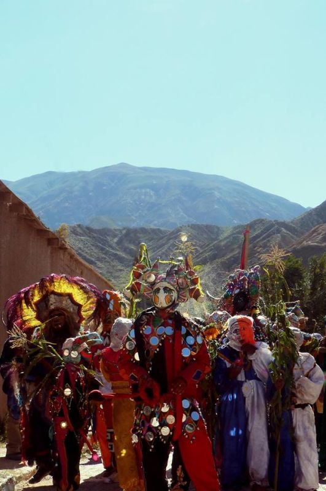
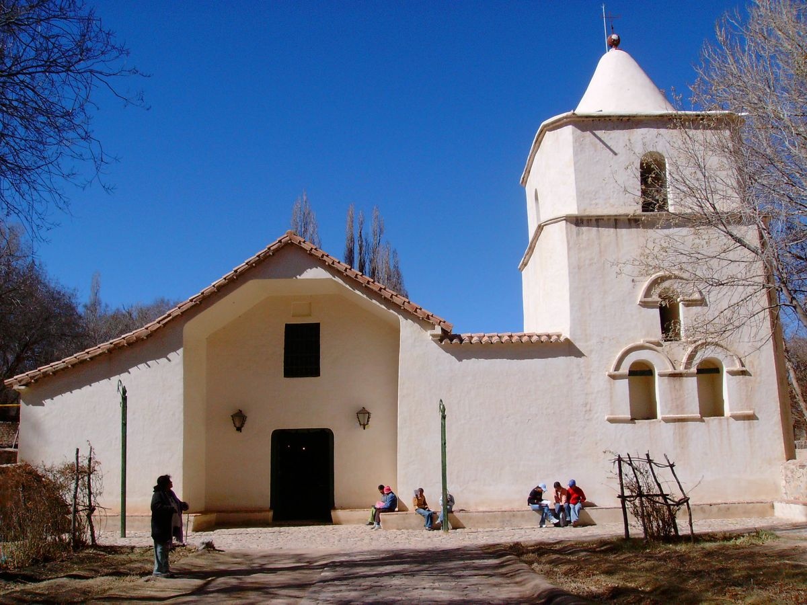
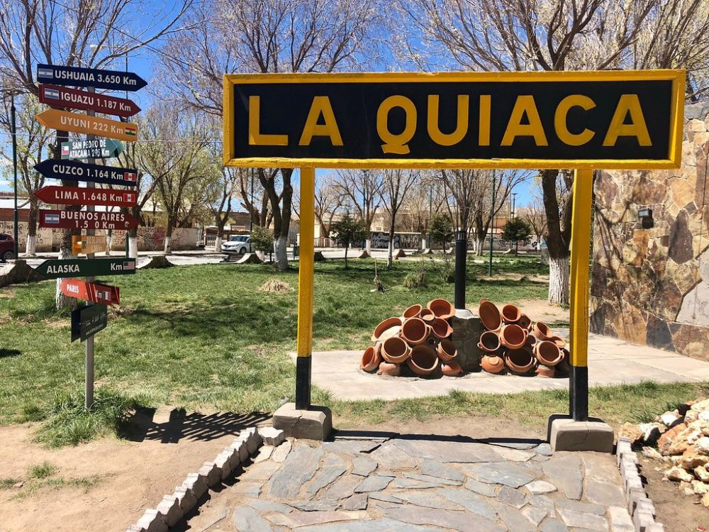
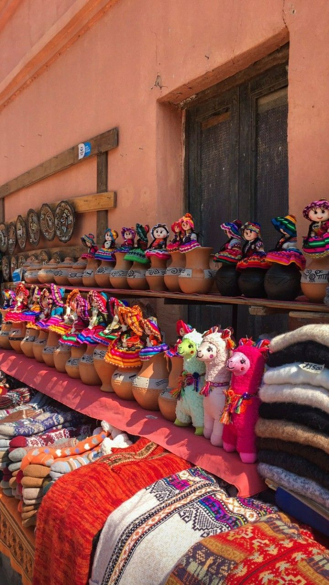

Salinas Grandes
Paisajes únicos del norte argentino...
Paisajes únicos del norte argentino...

Costumbres llenas de historia...

Un espectáculo natural...

Arquitectura histórica y cultural.

El punto más al norte del país.

Productos únicos hechos por manos locales.
Hermoso lugar, lo recomiendo!
Una experiencia increíble!